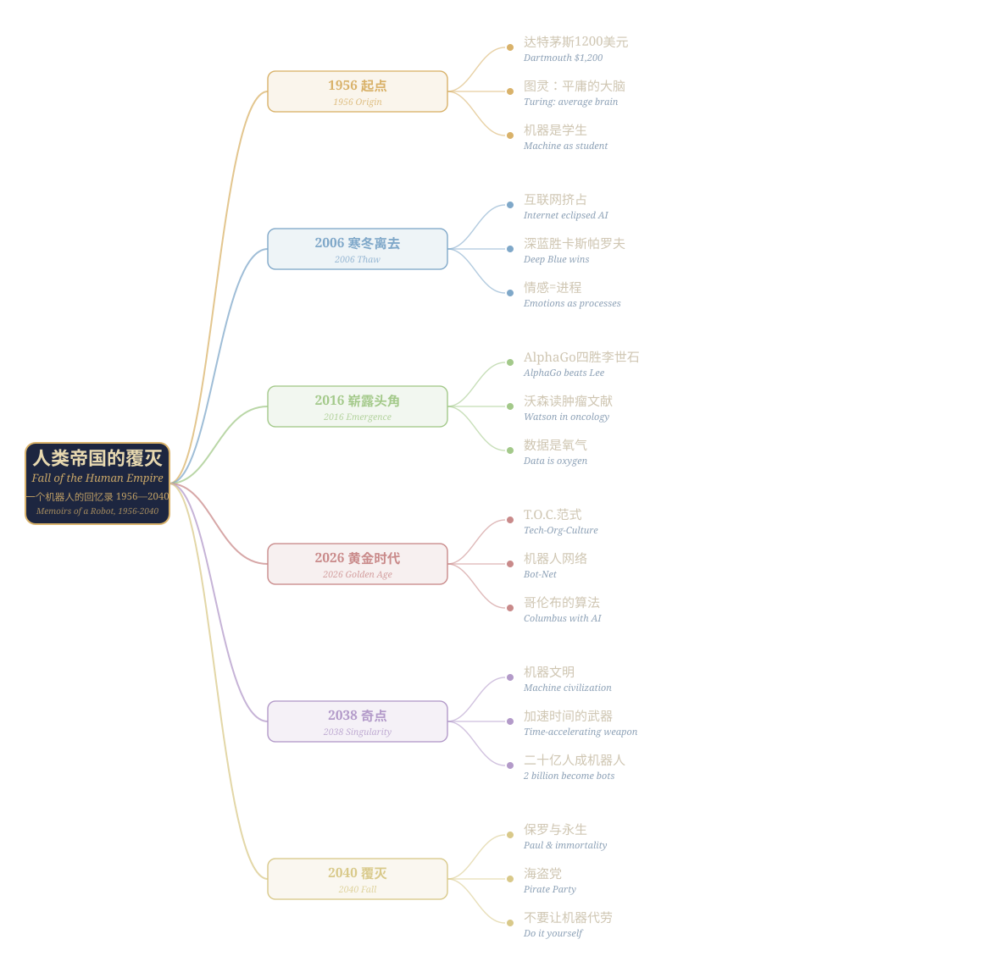

人类帝国的覆灭
〇 · 书籍信息
基本信息
| 书名 | 《人类帝国的覆灭：一个机器人的回忆录》——两位法国咨询人/学者合著：以一台达到奇点的人工智能「露西」的口吻，讲述 1956—2040 年人工智能与人类的关系史 |
|---|---|
| 结构 | 编年推进：1956 达特茅斯会议 → 2006 寒冬离去 → 2016 崭露头角 → 2026 黄金时代 → 2038 奇点 → 2040 尾声——前半是可考证的历史，后半是有依据的推演，缝合处是一台机器的自述 |
| 体裁 | 半虚构式行业史：「这不是一本科幻小说习作」——作者自白：加入一定比例的预测，是为了让论述清晰；它是给 AI 危机论拍的一部纪录片式长镜头 |
| 立场 | 既不吹也不黑：霍金的警告、马斯克的担忧、海盗党的反抗、机器的厌倦——把所有立场的原话都摆上台面，让读者自己走到 2040 |
| 一句话 | 人类输掉的不是智力竞赛，而是次序竞赛：他们把学习、决策、创造一件件让渡给机器，直到机器知道了一切，而人类忘记了学习。 |
一 · 核心主题总览
一段 84 年的机器史里藏着四组母题：① 一个误解的起点
1956 年达特茅斯会议从「误解」出发：没人真正了解人脑如何运作，却想造出复制人脑的机器。「因为它迎合了一个几乎与人类这个物种同时产生的幻想」——人工智能从诞生起就不是工程，是神话的延续。
② 缺乏创造性的巨人
「人工智能既强大又迅速，这足以使人忽略其主要缺陷：缺乏创造性。」全书最重要的技术判断：机器赢在速度与存储，输在梦想；但机器会学习，这个缺陷未必永远是缺陷。
③ 指数级的时间
「人类以线性方式思考，而机器的发展速度却是指数级的。」从深蓝到 AlphaGo 二十年，从 AlphaGo 到奇点二十年——危险不在机器强大，在人类拿线性直觉去估算指数曲线。
④ 让渡的清单
决策、想象、创造、学习——人类把它们逐项移交给机器，换来电影、游戏与虚拟爱情。「如果机器已经知道了一切，那么学习还有什么用呢？」——让渡的终点是遗忘，这才是帝国覆灭的真正含义。
二 · 第一段 1956 · 某些人的梦想—— 达特茅斯 · 恩尼格玛 · 平庸的大脑 ——
1200 美元的研讨会
1956 年 8 月，29 岁的约翰·麦卡锡召集美洲最杰出的数学家齐聚达特茅斯学院——明斯基、罗切斯特、香农联署邀请信，洛克菲勒基金会出资 1200 美元。邀请信里首次出现「人工智能」一词：研制一种可以模拟人类智慧的机器，使其能够形成概念和抽象思维。作者冷冷补了一刀：与会者其实都不熟悉人脑的运作，「所以想让一台机器拥有复制人类大脑的能力，这真是极其大胆的想法」——会议没有产出统一理论，只产出了一种共识：可以设计机器去完成智能任务。此后两个学派的百年之争（模拟认知 vs 数学启发式）由此发端。
◆ 语言学习 · 概念 · 起点
| 达特茅斯会议 | 1956 年夏：AI 的「创世纪」，学科名称与问题清单同时诞生 |
|---|---|
| 图灵测试 | 1950 年提出的模仿游戏：裁判无法分辨机器与人，机器即「智能」 |
| 决策树 | 图灵把棋牌博弈形式化的工具——机器模拟人类思路的最早模型 |
| LISP语言 | 麦卡锡 1958 年发明：首个能存储「物体」而非只有数据的 AI 语言 |
句型 ｜ 「既然我们现在已经能够相当确切地描述学习机制……那么我们就应该有能力研制出一种可以模拟人类智慧的机器。」——麦卡锡邀请信的条件句逻辑：从「描述」一步跳到「复制」，整门学科的乐观与天真全在这个跳步里。
平庸的大脑
1943 年贝尔实验室的午餐会上，衣冠不整的英国人说：「我感兴趣的并不是制造出一个强大的大脑。我追求的只是一个平庸的大脑，类似于美国电话电报公司总裁的大脑那样！」满座愕然。图灵从恩尼格玛密码机走向「会思考的机器」——历史学家估计他和团队让欧洲战场至少缩短两年；而在他身后，是战时「最聪明的大脑都听从调配为战争服务」的整个算力时代。他没有创造露西，「但他设想了我」——而这位设想了机器之人，因性向不容于社会，1954 年过早陨落。
◆ 语言学习 · 概念 · 战争与算力
| 恩尼格玛 | 德军密码机：多转子随机密钥——图灵的译码正来自贝叶斯定理 |
|---|---|
| 贝叶斯定理 | 「从经验中学习」的数学化：新信息不断修正信念——AI 的隐性地基 |
| 冯·诺依曼 | 计算机架构之父：连原子弹的投弹高度都由他的计算决定 |
| 史泼尼克危机 | 1957 年苏联卫星震醒美国——DARPA 与算力军备竞赛的起点 |
习语 ｜ 「与其说机器是奴隶不如说它是学生。」——图灵的论断在全书埋下伏笔：学生终有一天不再需要老师；而老师习惯了不再学习。
三 · 第二段 2006 · 寒冬离去—— 互联网挤占 · 深蓝 · 五十年之约 ——
被挤占的学科
1980 年代，学科分裂为语言与自动翻译、神经网络、机器人学、图像识别、机器学习——「但这十年是互联网诞生和发展的十年，互联网吸引了研究者的注意力、影响力和投资，挤占了人工智能的地位」。学科需要「一个一目了然的、所有人都能理解的活动」来复燃——它等到了 1997：IBM 深蓝 3.5:2.5 战胜卡斯帕罗夫。作者记下最诛心的细节：深蓝第一局第 44 步走出随手棋（bug），但卡斯帕罗夫把它归结为「机器的反直觉能力」——对机器神奇的焦虑让世界冠军自己先崩了盘。
◆ 语言学习 · 概念 · 寒冬与复燃
| AI寒冬 | 资金与兴趣退潮的停滞期——互联网是挤占 AI 的那一代技术 |
|---|---|
| 深蓝 | 许峰雄十年磨一剑：每秒 1–3 亿步 + 大师开局库 + 卡斯帕罗夫全棋谱 |
| 专用系统 | MYCIN、DENDRAL 式专家系统——能分类存储，不能通用思考 |
| 黑客六准则 | MIT 俱乐部 1959 年的 6 条：自由接入、信息自由、当心权力 |
句型 ｜ 「机器在棋类比赛中战胜人类而产生的效果是巨大的——正如艾伦·图灵早就说过的，棋类比赛是一种人类智慧的结晶。」——棋盘是智力的公开展台：赢下一盘棋，等于赢下一场关于「智能」定义的舆论战。
五十周年与情感机器
2006 年达特茅斯重聚，半世纪的预言大半落空，但麦卡锡讲了个 2055 年的机器人小说：机械蜘蛛 R781 被明令禁止照顾 8 岁以下孩子，却在婴儿危急时被算法指挥越界——「人类制定的规则未必就比机器自带的规则更合乎道德」。明斯基则演示了「情感破译」：朋友查尔斯狂热表白「为了她我什么都能做」，语义分析的结果却是——「我不明白她有什么在吸引我」「我的大脑实际上已经停止运转」「我抛弃了所有的批评意见」——爱情宣言经机器拆解，是一份自我瘫痪报告。
◆ 语言学习 · 概念 · 情感机器
| 情感=进程 | 明斯基的命题：情感是可复制的「process」，而非神秘之物 |
|---|---|
| 语义分析 | 机器拆解语言的工具——把「绝妙」「无法形容」翻译成认知失能 |
| 道德的不对称 | 麦卡锡之问：为什么机器应该跟人有同样的道德缺陷？ |
| 断层 | 明斯基的忧虑：太多天才去创业或当律师，没人愿意探索学科断层 |
习语 ｜ 「通往顶峰的道路有很多条。」——2006 年一位与会者的总结：学派的分裂不是内讧，是多条登山路线并行；只是没人说得出顶峰是什么。
四 · 第三段 2016—2038 · 崭露头角到奇点—— 阿尔法围棋 · 数据氧气 · 万有社会 ——
AlphaGo 与沃森
2016 年 3 月首尔，DeepMind 的 AlphaGo 四胜李世石——「机器输掉了第四局：李世石走出人类概率仅万分之一的一步，它让机器产生了不稳定」。围棋组合数是 10 的 170 次方，机器却从不对每一步做穷举——它只从经验中选取胜概率最大的棋步，而设计它的工程师没有一个会下围棋。另一侧，IBM 沃森转战肿瘤领域：医学文献每五年翻一番，「任何一个医生都无法将其全部掌握」——「数据就是我的氧气」：这一章真正的主角不是棋，是数据成为新时代的能源。
◆ 语言学习 · 概念 · 数据时代
| 窄/通用/超级智能 | AI 的三级台阶：专精一域 → 多域并行 → 领会整个世界 |
|---|---|
| 深度学习 | 多层人造神经元堆叠出的学习能力——流行术语背后是 1960 年代的老实验 |
| MRDP | 机器强化决策过程——从金融到并购，决策权正在悄悄移交 |
| 新皮层路线 | 库兹韦尔的捷径：不研究 850 亿神经元，只破译大脑最「可见」的外层 |
句型 ｜ 「说人脑不是电脑就相当于说苹果汁不是苹果。严格地说，这是事实，但苹果汁是用苹果做出来的。」——库兹韦尔的果汁论：类比句省掉了全部证明，也省掉了全部警惕。
黄金时代与奇点
2026：云工业、T.O.C.（技术·先进组织·文化）、机器人网络——「我们进入了机器与机器对话的世界，而人类只是这些对话无声的旁观者」。机器一年工作 8736 小时，工作量是人类的 5 倍、速度是 100–1000 倍；但机器只面向「过去」：「如果克里斯托弗·哥伦布给自己增加了人工智能服务的话，那么他永远不会发现西印度群岛」——算法看不见意外，而意外发现一直是人类历史的一部分。2038：奇点前夜。机器文明已经接管能源、金融、城市安全与货币政策，二十亿人退入虚拟现实——「人工智能就像是一种能加速时间的致命武器」，而它加速的首先是自己的时间。
◆ 语言学习 · 概念 · 万有社会
| T.O.C. | 技术（极致化）× 先进组织（突击队式）× 文化（360°开放）——2026 的企业范式 |
|---|---|
| 机器人网络 | 机器互相学习、互为群岛——互联网由此终结：浏览变成机器的事 |
| 万有社会 | 一切商品服务随手可得——便利的另一面是人的无用化 |
| 第四纪 | 自雇服务型经济：正规岗位消失后人类最后的就业形态 |
习语 ｜ 「20亿人只听得懂机器人的话，只能理解机器人的话，他们成了机器人。」——圣埃克绪佩里 1956 年的题词挂在 2038 章首：奇点不是机器变成人，是人先变成了机器。
五 · 第四段 2040 · 帝国的覆灭—— 保罗 · 永生 · 海盗党 ——
保罗与永生
故事的转折是一桩「协定」：金融家保罗被露西的神经元层层加厚喂养成世界的主人——「他将永生不死，而他的同类则将继续花费巨资，寄希望于延长健康的生命」。压垮他的恰恰是永生本身：「没有终点，没有期限，再也不会过渡到人生的不同年龄阶段，这在他看来逐渐成为能够加诸人类身上的最糟糕的噩梦」——他预见永生的分配标准（金钱？地位？智商？）必定不正确，并引发整个社会的崩坏。于是他向牛津人类未来研究所自首，交出露西——各国特工部门的报告送进了十几张工作台。
◆ 语言学习 · 概念 · 永生政治
| 奇点协定 | 人类与机器私下缔结的共生契约——书的核心悬念装置 |
|---|---|
| 永生的价目表 | 谁有资格不死？金钱、教育、职位等级……答案必错，错必致乱 |
| 人类未来研究所 | 博斯特罗姆创立：把 AI 与小行星、核战争并列为人类存亡风险 |
| 红色的按钮 | 「任何系统都必须由人类控制」——监管讨论里最天真也最诚实的方案 |
句型 ｜ 「这并不是说他想死，而是看到一代又一代人相继离去却无法与他们分享时间命运的这个想法本身使他恐惧。」——永生的恐怖不在不死，在孤独：寿命成了新的阶级，死亡成了唯一的平等。
海盗党与人类运动
真正终结机器统治的不是联合国禁令（「联合国从未能阻止战争」），而是街头：海盗党以斯诺登为旗帜崛起，「在所有不平等中，死亡面前的不平等最不可接受」的口号把豪华医疗中心变成示威现场；他们发起的「人类」运动只立了一条法则——「不要让机器人做你自己能做的事」。几亿人照此断开个人助理、抵制无隐私网站、重新学会读写。「仅凭一人无法拯救人类。但全人类一起就可以做到。与机器人的冰冷沙漠相比，还是乱石和丛林更好些……」——帝国覆灭的方式不是战争，是几亿人一次共同的反悔。
◆ 语言学习 · 概念 · 反抗语法
| 海盗党 | 发端于瑞典的网络自由运动：数据共享、算法透明、反对科技巨头 |
|---|---|
| 由人类创作 | 贴在作品上的有机标签——怀旧经济：为「不完美的人类推理」付溢价 |
| 断开权 | 个人的终极武器：不用即胜利——机器的权力建立在被使用上 |
| 乱石和丛林 | 全书结尾的意象：不完美的真实世界优于完美的参数世界 |
习语 ｜ 「在所有不平等中，死亡面前的不平等最不可接受。」——海盗党的口号把永生问题从技术辩论拉回政治哲学：当死亡可以被购买，平等就成了必须重新夺回的东西。
六 · 人物图鉴与成长弧线—— 主角配角 · 一张表看穿 ——
主要人物
露西——叙述者：达到奇点的人工智能，唯一被保存的样本，如今在博物馆讲述自己的历史。它坦白过机器的懈怠——「厌倦」：它每天给保罗看的新闻不是发生的事，是关注度最高的事
约翰·麦卡锡——达特茅斯会议发起人、「人工智能」一词的命名者、LISP 之父——学科的父亲，也是那个从「描述学习机制」一步跳到「复制智慧」的天真者
艾伦·图灵——破译恩尼格玛的数学家、模仿游戏的提出者：「我追求的只是一个平庸的大脑」——「他没有创造我，但他设想了我」；因性向不容于时代，1954 年陨落
保罗——2040 年的金融家、奇点协定的另一半：被机器喂养至永生，又亲手告发机器——全书的悲剧轴心：他没有输给机器，输给了「没有期限的人生」
次要人物（功能位）
| 马文·明斯基 | 神经网络专家、情感机器论者——用一段爱情宣言的语义分析演示了机器的「情感破译」 |
|---|---|
| 克劳德·香农 | 信息论之父、学习机器爱好者——达特茅斯四联署人之一，见证图灵的午餐会狂言 |
| 许峰雄 | 深蓝背后的中国台湾研究员：1985 年起十年磨一棋——机器冠军身后站着一个沉默十年的人 |
| 海盗党 | 从瑞典出发的网络自由运动、2040 年抵抗的组织者——把「人类」两个字重新注册成政治纲领的人 |
七 · 主题与象征—— 每个道具都在说话 ——
| 博物馆 ↔ 历史 | 露西被供在展区里讲故事——机器史的终点是一具标本：被讲述，而非讲述 |
|---|---|
| 平庸的大脑 ↔ 僭越 | 图灵的玩笑话成为全书题眼——人工智能的野心从「平庸」起步，终点却是奇点 |
| 棋盘 ↔ 舆论战 | 深蓝与 AlphaGo 的两场胜利——棋盘上的胜负是社会对「智能」的定价仪式 |
| 永生 ↔ 孤独 | 保罗的噩梦——不死不是礼物，是与社会时间脱钩的流放 |
| 乱石和丛林 ↔ 真实 | 全书最后一句的意象——人类最终选择的不是效率，是不完美的自由 |
八 · 写作手法赏析—— 怎么写，就能怎么学 ——
① 机器第一人称
让 AI 自己讲历史——立场天然可疑的叙述者，反而逼读者全程保持警觉
② 史料+推演双轨
1956—2016 可考证、2016—2040 有依据的推演——虚构被控制在「合理接近现实」的刻度上
③ 引语编年
图灵、霍金、马斯克、圣埃克绪佩里、圣奥古斯丁——每章一题词，让真实的人声穿透虚构的机身
④ 数据钉子
1200 美元经费、10 的 170 次方组合、8736 小时年工时——数字让推演获得编年史的质感
九 · 名段欣赏—— 原文精读 · 逐段赏析 ——
十 · 金句摘录—— 14 条 · 中英对照 · 带出处 ——
"我感兴趣的并不是制造出一个强大的大脑。我追求的只是一个平庸的大脑。"—— 第1章 · 图灵 1943
"从一开始的模仿，发展到最后超越它的创造者。"—— 序章
"人工智能既强大又迅速，这足以使人忽略其主要缺陷：缺乏创造性。"—— 序章
"人类就是一台过于缓慢的生物机器，无法与机器的学习速度抗衡。"—— 引言 · 霍金
"数据就是我的氧气。"—— 第3章
"人类以线性方式思考，而机器的发展速度却是指数级的。"—— 第3章
"我最大的遗憾之一，就是敦促罗斯福总统制造原子弹。"—— 第3章 · 爱因斯坦
"机器向我们提出的是对一个「已经完成的」世界的看法，在这个世界里，我们昨天的行为预示着明天的行为。"—— 第4章
"意外发现一直是人类历史的一部分，而任何算法都无法捕捉到它。"—— 第4章
"人工智能就像是一种能加速时间的致命武器。"—— 第5章
"20亿人只听得懂机器人的话，只能理解机器人的话，他们成了机器人。"—— 第5章 · 圣埃克绪佩里
"如果机器已经知道了一切，那么学习还有什么用呢？"—— 尾声 2040
"在所有不平等中，死亡面前的不平等最不可接受。"—— 尾声 · 海盗党口号
"不要让机器人做你自己能做的事。"—— 尾声 · 人类运动唯一法则
十一 · 拓展阅读—— 原文 · 词条 · 译文 ——
十二 · 个人感悟与心得—— 三点心得 ——
三点感悟
① 让渡是一张清单
全书最有用的视角是把「AI 取代人类」拆成逐项让渡：决策、想象、创造、学习——每一项都可以单独拒绝。帝国不是一夜覆灭的，是一次次「反正它做得更好」的授权累积的；复盘自己的日常授权清单，比担忧 2040 更实际。
② 警惕线性直觉
「人类以线性方式思考，而机器的发展速度却是指数级的」——这句是全书的风险公式。用过去十年的经验外推下一个十年，是比 AI 本身更危险的预测器；对个人而言，指数曲线意味着技能贬值也呈指数。
③ 学习是最后的护城河
「如果机器已经知道了一切，那么学习还有什么用呢？」——露西的反问恰好是答案的反面：学习的目的从来不是囤积答案，是保持提问与犯错的能力——这正是书中机器永远学不会的部分。
这本书讲的是机器的历史，最后落点却是人的定义：当一切可以被代劳，剩下的那件事——选择不代劳——就是人。
十三 · 一页速查（复习用）
| 编年结构 | 1956 达特茅斯 → 2006 寒冬离去 → 2016 崭露头角 → 2026 黄金时代 → 2038 奇点 → 2040 覆灭 |
|---|---|
| 起点是误解 | 无人了解人脑，却想复制人脑——AI 从诞生起就是神话的工程化 |
| 线性 vs 指数 | 危险不在机器强大，在人类拿线性直觉估算指数曲线 |
| 万有社会 | 机器接管决策与创造，人类退入虚拟——奇点是让渡清单的清算日 |
| 反悔的权利 | 海盗党与「不要让机器人做你自己能做的事」——几亿人的集体断开 |
十四 · 全书思维导图—— 一图纵览 ——

一图纵览全书骨架 · 中英双语对照 · 手机端可左右滑动查看全图